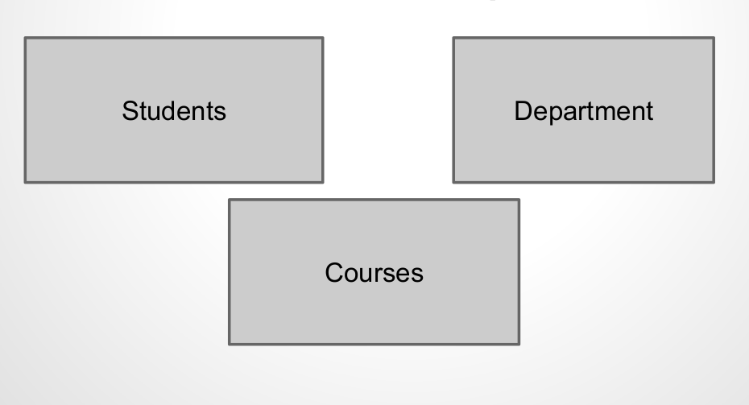

class: center, middle ## Computer System (Database) SBE306 By: Ayman Anwar email: Ayman.anwar.bio@gmail.com --- class: left, top ## Data Modelling Entity-Relationship(ER) Models --- ## ER model  <!-- <img src="../../images/ERmodel.png" width="100%"> --> --- ## ER model (cont)  --- ## Standard Query Language(SQL) * It is a standard language for accessing and manipulating databases. * MySQL is a Relational Database Management System (RDMS) * Like Microsoft SQL Server, Oracle, Postgres, etc. --- ## Let’s try a simple example Complete the following ER Model and use Workbench to create a simple database for this model. <!--  -->  lets convert our model to Database Tables --- ## List of used abbreviations 1. PK : Primary Key 2. NN : NOT null 3. BIN : Binary 4. Unsigned 5. UQ - Create/remove Unique Key 6. ZF - Zero-Filled 7. AI - Auto Increment